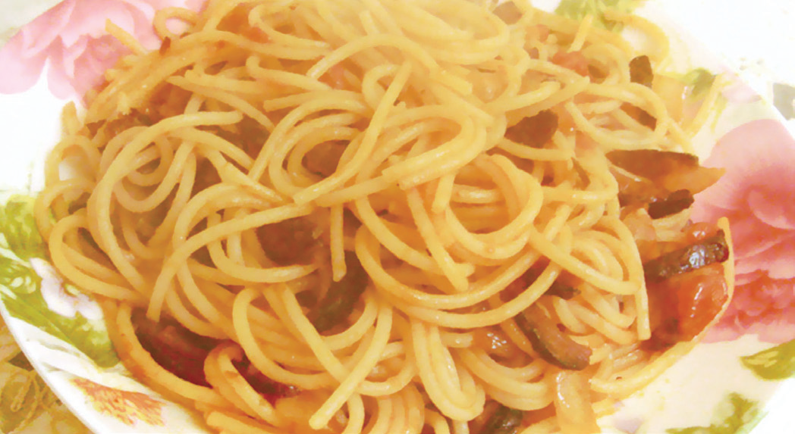

Side Dishes
In a Western meal, it is possible that side dish and main course are considered a combination. Side dishes are listed under the a La Cart column. In spite of the large varieties of side dishes and diners' preferences, the principle of choosing side dishes is to maintain harmony with the main course in terms of genre and nutrition.
Given that main courses are primarily meat dishes, typically vegetables are the side dishes. Most of the time, when vegetables serve as side dishes, they are served in the form of salads. A side salad is usually served in a small bowl or special salad plate.
In addition to vegetables, starch side dishes are also very popular. Common sides include dinner rolls, garlic bread, wild brown rice, macaroni, spaghetti, mashed potatoes, baked potatoes, as well as potato salad. Coleslaw, corn, baked beans, soups, and French fries are also pleasing choices.
